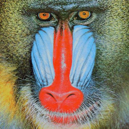

Accessing Pixel Data¶
Even though, ICL provides a huge set of predefined filters and image operators, it is sometimes necessary to implement custom image processing algorithms. For this, it is usually necessary to know how to access an images pixels. Therefore, this chapter of the tutorial introduces different techniques to do so. First, let us review the pixel access technique from the previous example:
1 2 3 4 5 6 7 8 9 10 11 12 13 14 | #include <ICLQt/Common.h>
int main(){
Img8u image = cvt8u(scale(create("lena"),640,480));
for(int c=0;c<image.getChannels();++c){
for(int x=0;x<image.getWidth();++x){
for(int y=0;y<image.getHeight();++y){
image(x,y,c) = 255 * (image(x,y,c)>128);
}
}
}
show(cvt(image));
}
|
The resulting source code is very intuitive, but not optimal in terms of performance. In order to understand why the (x,y,channel)-operator can never be optimal in terms of performance, you’ll have to learn more about how the image data is managed internally:
ICL’s image data types always use a planar data layout. Interleaved data layout is not supported, but efficient conversion functions called interleavedToPlanar and planarToInterleaved are provided in the header ICLCore/CCFunctions.h. Each ICL image instance of type Img manages a vector of channel data pointers. Each of these point to a single memory chuck that contains all pixel values row-by-row (row-major-order) for the whole image channel. Therefore, the (x,y,channel)-operator always needs to address the referenced channel-data-pointer first, before it is able to compute the particular offset within channel data chunk (using x+y*width). In short, the (x,y,channel)-operator is easy to use, but rather slow.
Other Pixel Access Techniques¶
In the following, the different provided techniques for pixel data access are listed and compared in terms of convenience and performance. In general, it is not possible to pick the best method for everything. In particular it heavily depends on whether optimal performance is mandatory or negligible where it is used.
Operator-(x,y)¶
This operator returns a utility structure, which references a whole pixel i.e., all image channels at once. Due to its high overhead for creating the pixel-reference data type (of type PixelRef), this technique should only be used in sections of your code that are not time-critical at all. But here, it is a very convenient feature
Iterator-based Access¶
The Img-classes provide STL-like iterator-based access to the channel data pointers using the methods Img::begin(channel) and Img::end(channel). This technique allows for using STL algorithms in a convenient way. Setting a whole channel to a given value can be applied e.g. using:
std::fill(image.begin(0),image.end(0),255);
Most of the time this is even faster than writing an own for loop, because most STL-algorithms are optimized using loop-unrolling.
Iterator-based Access of ROI Pixels¶
The Img class is endowed with a so called Region of Interest or short ROI. The ROI defines a rectangular image-mask that is enabled for processing. Nearly all ICL functions and utility classes (and even the internally used Intel IPP functions) apply their functionality on the image ROI only. The ROI-iterators run successively line by line through the image ROI pixels only. Here, the access functions are named Img::beginROI(channel) and Img::endROI(channel).
1 2 3 4 5 6 7 8 | #include <ICLQt/Common.h>
int main(){
Img32f image(Size::VGA,1);
// mask out the outer 10 pixels of the image
image.setROI(Rect(Point::null,Size::VGA).enlarged(-10));
std::fill(image.beginROI(0),image.endROI(0),255);
}
|
Image Channel-based access¶
The major part of the computational overhead of the (x,y,channel)-operator is a result of the dynamic channel pointer look-up. If you know in advance how many channels your image has (most of the time 1 or 3), you can apply this step beforehand by extracting an instance of type Channel (where the template parameter T is you pixel type) from your image using the index operator.
1 2 3 4 5 6 7 8 9 10 11 | #include <ICLQt/Common.h>
int main(){
Img32f redChess(Size::QVGA,3);
Channel32f c = redChess[0];
for(int x=0;x<c.getWidth();++x){
for(int y=0;y<c.getHeight();++y){
c(x,y) = 255*((x+y)%2);
}
}
}
|
Note
This is more than twice as fast than using the (x,y,channel)-operator directly.
Linear Channel Data Access¶
The Channel-template can also be used for linear data access. In cases, where the (x,y) coordinate is not necessary for a certain operation, the image data can be processed in a single loop through all image lines. To this ends, the Channel lass also implements the index-operator Channel::operator[](int idx). Using the Channel instead of accessing the channel data pointer directly has no speed advantages, but sometimes it increases the readability of your code.
Low Level Data Access¶
One of our design principles was to always provide low level data access if this can help to increase performance or to provide additional but non common features. Therefore, the Img class template was designed so that
- it defines a high-level abstraction layer that encapsulates the internal data handling so that the uses does not have to care about it
- it always provides well-defined access to it’s internal image data. I.e., Img::begin(channel) and Img::end(channel) actually return the internal channel data pointers directly
- if the user wants or needs to perform the data-handling manually, an Img instance can also be wrapped around existing data-pointers shallowly. I.e., it can reference existing data without the need to copy it pixel-by-pixel into it’s own data structures
1 2 3 4 5 6 7 8 9 10 11 12 13 14 15 16 17 18 19 20 21 22 23 24 25 26 27 28 29 30 31 32 33 34 35 36 37 38 39 | #include <ICLQt/Common.h>
int main(){
// create an 8u image of the mandril test image
Img8u image = create<icl8u>("mandril");
// the image has core::formatRGB, i.e. 3 channels
// these can be extracted using begin
const icl8u *r = image.begin(0);
const icl8u *g = image.begin(1);
const icl8u *b = image.begin(2);
// lets find out, where the red-channel value
// is higher than the green- and blue-channel value
// here, we don't need (x,y)-access, so our loop
// iterates linearily over all pixels
// result image (same size, one channel)
Img8u result(image.getSize(),1);
// number of pixels
const int dim = image.getDim();
icl8u *res = result.begin(0);
for(int i=0;i<dim;++i){
if((r[i] > g[i]) && (r[i] > b[i])){
res[i] = 255;
}else{
res[i] = 0;
}
// btw. nice optimization
// res[i] = 255 * ((r[i] > g[i]) && (r[i] > b[i]));
}
// show results
show(image);
show(result);
}
|
source image  |
result image |
Functional Data Access¶
The C++-STL provides the powerful algorithm header that contains simple but highly optimized algorithms. Algorithms can also be higher-order functions i.e., functions that get templated function-parameters. E.g. the std::for_each function gets a data range and a function or function-object (a so called functor) that has to be applied on each element of the given range. We also implemented these functional data access patterns for the Img class. The functions
copy their STL-counter part’s behavior for the image data including ROI support. Since C++ automatically uses inline templating here in order to avoid expensive function-calls for each image pixel, this is not only elegant, but usually also leads to fast solutions. Here is an example for a thresholding operation using the Img::forEach function
1 2 3 4 5 6 7 8 9 10 11 12 13 14 15 16 17 18 19 20 21 22 23 24 25 26 27 28 29 30 31 32 33 34 | #include <ICLQt/Common.h>
void thresh_func(icl8u &t){
t = 255*(t>128);
}
int main(){
Img8u image = create<icl8u>("lena");
image.forEach(thresh_func);
// with C++-11 standad supported, we can use
// an inline lambda expression
image.forEach( [](icl8u &p){ p = 255 * (p>127); } );
}
// using closures, this could also be parameterized
void thresh(Img8u &image, icl8u t){
// copy t into the lambda scope (by value)
image.forEach ( [t](icl8u &p){ p = 255 * (p>t); } );
}
void reduce_channels_example(){
Img8u rgb = create<icl8u>("lena")
Img8u gray (rgb.getSize(),1);
// ok, for simplicity, lets use a C++-lambda
// expression again. Please note, that
// auto can be used for implicit type-binding
auto f = [](const icl8u src[3], icl8u dst[1]){
dst[0] = ((int)src[0]+src[1]+src[2])/3;
};
rgb.reduce_channels<icl8u,3,1,decltype(f)>(gray, f );
}
|
Perhaps, the for-loop based alternative provides better readable code, but once we would also add efficient ROI-handling, it would become much more code.